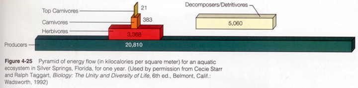

- Producción secundaria y descomposición
- Producción secundaria
- Definición
- Tasa de producción de nueva biomasa por parte de organismos heterótrofos.
- Kjulios / m2 /año
- Kg /m2/año
- Está relacionado con las dinámica poblacional de los heterótrofos.
- Redes tróficas
- ¿a qué se deben estas pérdidas?
- No todos los productores son consumidos.
- Los consumidores no digieren el 100% de lo que comen.
- La respiración disipa mucha energía en forma de calor.
- Esquema del flujo de energía en un compartimento de la red trófica.
- Control de la producción secundaria
- Relación con la producción primaria
- Lineal y directa
- A más producción primaria, más producción secundaria.
- Suele ocurrir que la producción secundaria es un orden de magnitud menor que la primaria.
- relación fitoplancton - zooplancton
- Relación lluvia-produción primaria - producción secundaria en sabana africana.
- Bottom-up: la producción primaria determina la cantidad de consumidores.
- Top-down: los depredadores controlan la cantidad de herbívoros. Por tanto los depredadores "regulan" la cantidad de productores primarios.
- Cascadas tróficas
- Anomalías provocadas por especies invasoras. El ejemplo de las ratas en las islas oceánicas
- El papel de la humanidad como consumidor y productor secundario
-
- Consumimos, como promedio (y en 2008) un 20% de la PPN
- Distribución espacial
- biomasa "humana"
-
- Descomposición
- Definición
- Proceso mediante el cual la materia orgánica muerta se transforma en materia inorgánica
- Es "punto" de cierre del ciclo de la materia en la Tierra.
-
- Actores implicados
-
- Vertebrados
- Invertebrados
- Escarabajos peloteros

- Cuando sus poblaciones decaen, la producción primaria también lo hace. Ej. ivermectina. Sustancia antiparasitaria usada en el ganado.
- Lombrices de tierra.
- Pueden procesar hasta 250 Tm de suelo por hectárea.
- Contribuyen a crear la estructura del suelo.
- Bacterias: se alimentan fundamentalmente de animales muertos.
- Hongos: descomponen fundamentalmente materia vegetal muerta.
-
-
-
- Ocure tanto en aguas libres como en el fondo del océano.
- Actores
- Bacterias
- Flotando en el agua
- Tapizando el fondo oceánico.
- Animales
- Gusanos (anélidos)
- Equinodermos
- Crustaceos
- Redes tróficas
- Dos tipos generales de cadenas tróficas
- Pirámides
- Numéricas
- De biomasa
- De energía
- 